In this lesson you will learn
|
From geometry to dynamics
In lesson L2.3 we derived the Friedmann equation from Newtonian energy
conservation. The argument was elegant but left questions open. What exactly is  ?
Why should pressure affect gravity? Does the derivation still hold for radiation or dark
energy?
?
Why should pressure affect gravity? Does the derivation still hold for radiation or dark
energy?
General relativity answers all of these. The recipe has three steps:
- Choose the metric: FLRW (lesson L6.1).
- Choose the matter: a perfect fluid with density
 and pressure
and pressure  .
. - Insert both into Einstein's field equations.
We will not grind through every derivative, but we will follow the logic and check the result.
Step 1: the metric
For simplicity take flat space. In Cartesian comoving coordinates the FLRW metric is
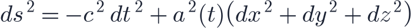
so the metric components are
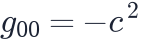
and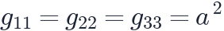
, with all others zero. Curvature adds terms proportional toStep 2: a perfect fluid
On large scales every ingredient of the universe behaves as a
perfect fluid: no viscosity and no heat flow, fully described by its
energy density  and pressure
and pressure  . For observers moving with the fluid, its
energy–momentum tensor is simply
. For observers moving with the fluid, its
energy–momentum tensor is simply
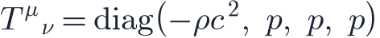
The first entry is the energy density; the other three are the pressure pushing in each space direction. By isotropy, the pressure is the same in all directions.
Step 3: curvature of the FLRW metric
The Einstein tensor is built from second derivatives of the metric. For the FLRW metric,
all the derivatives involve only  . The results are
. The results are
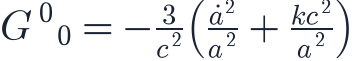
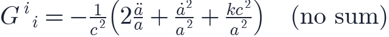
All off-diagonal components vanish, a consequence of homogeneity and isotropy.
Why only two equations? Einstein's equations are ten equations in general. Symmetry reduces them to two independent ones: the time–time part and the three identical space–space parts. |
The time–time equation: Friedmann's first equation
Setting
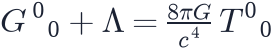
and multiplying by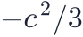
: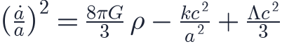
This is exactly the Friedmann equation of lesson L2.3, now with three important clarifications:
- includes all forms of energy divided by
 : rest mass, radiation, kinetic
energy, and dark energy.
: rest mass, radiation, kinetic
energy, and dark energy.  is not a Newtonian energy but the curvature of space appearing in the metric.
is not a Newtonian energy but the curvature of space appearing in the metric. appears naturally as a term in the field equations.
appears naturally as a term in the field equations.
The space–space equation: acceleration
The space–space components give a second equation. Subtracting the first equation from it eliminates
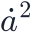
and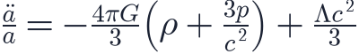
Pressure gravitates In Newtonian gravity only mass attracts. In general relativity pressure contributes to the source of gravity with weight 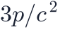 . For radiation (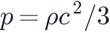 ) this doubles its gravitational pull. For a cosmological constant, whose pressure is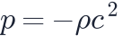 , the combination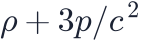 is negative: gravity becomes repulsive and the expansion accelerates. This is impossible to understand in Newtonian terms. |
Energy conservation: the fluid equation
In general relativity the energy–momentum tensor obeys
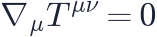
, a consequence of the field equations themselves. For a perfect fluid in the FLRW metric this gives
It is the first law of thermodynamics, , for a comoving volume
. For an equation of state  (lesson L3.1)
it integrates to
(lesson L3.1)
it integrates to

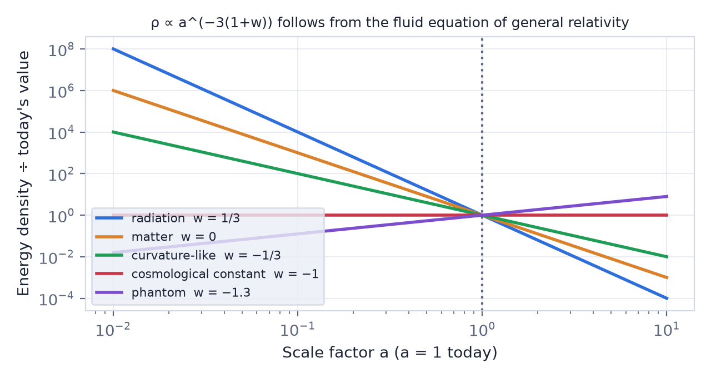
Check: differentiate the Friedmann equation Differentiate the first Friedmann equation in time (with ) and use the fluid equation to replace 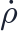 . The |
Evolving dark energy
If dark energy is not a constant but a fluid with a time-dependent equation of state, the same machinery still works. A popular description is
Integrating the fluid equation gives
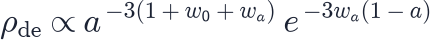
. Surveys such as DESI fitTry it: Build Your Own Universe Change w0 and wa in the universe builder and watch the history, the fate and the report card respond. |
What the Newtonian derivation got right, and wrong
| Newtonian sphere | General relativity | |
|---|---|---|
| Friedmann equation form | ✓ same | ✓ |
| Meaning of |
energy of a test particle | curvature of space |
| Pressure as a source of gravity | missing | |
| Radiation and dark energy | only by analogy | included exactly |
| Cosmological constant | added by hand | natural term in the field equations |
| Light, redshift, horizons | not described | follow from the metric |
Remember this
|